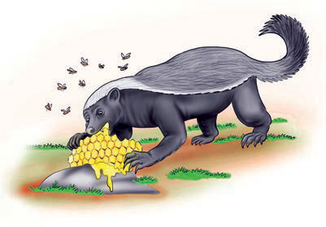
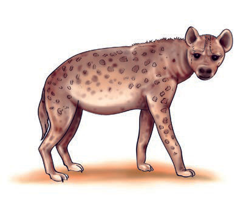

4.

Mimi ni Nyegere. Ni mnyama mdogo. Ninapenda sana kula asali. Ninajua maana ya methali fuata nyuki ule asali. Maana yake ni kuwa fuata wema upate mema. Mimi hutembelea maeneo yenye asali. Ushuzi wangu huwalevya nyuki.
5.
Mimi ni Sungura. Ni mnyama mjanja kuliko wote. Daima nina haraka sana. Ninajua methali isemayo haraka haraka haina baraka.
6.

Mimi ni Fisi. Ni bwana afya wa porini. Ninajua maana ya methali isemayo asiyesikia la mkuu huvunjika guu. Maana yake ni kuwa asiyesikia anayoambiwa na wakubwa mwisho hupata matatizo. Kutokana na uroho wangu mara nyingi napata matatizo makubwa.